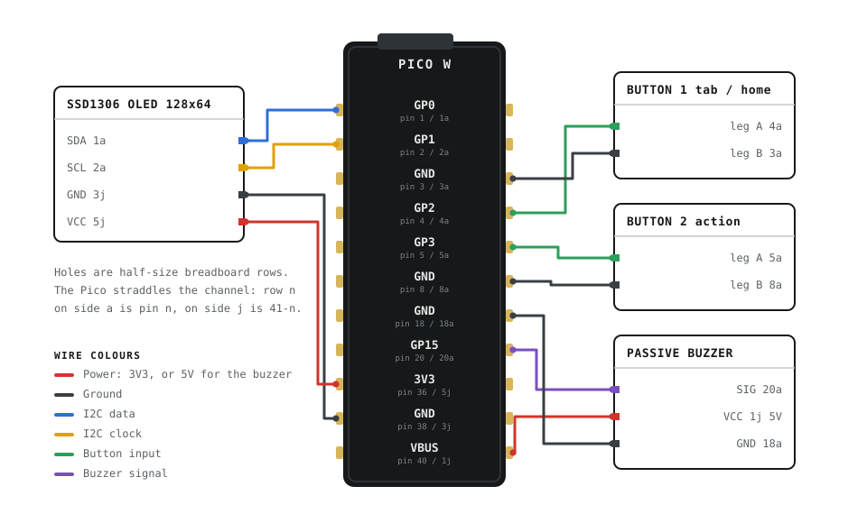

A desk buddy
that looks back.
Mimic is a Raspberry Pi Pico W, a 128×64 OLED and two buttons. It keeps an eye on the weather, your calendar, your music and your machine — and pulls a face about all of it.
8 screens · 2 buttons · 1 passive buzzer · 3 printed parts
This is the real interface, running in your browser.
Eight screens, two buttons
tap a row to send it to the screenOne button walks the tabs and goes home when you hold it. The other does whatever the current screen needs. Nothing is more than two presses away.
What it is made of
about £25 of partsEverything sits on a half-size breadboard inside a printed case. No soldering — female-to-male jumpers, and buttons that come pre-assembled on discs.
| Part | What it does | Notes |
|---|---|---|
| Raspberry Pi Pico W | Brains and Wi-Fi | 2.4 GHz networks only |
| SSD1306 OLED 0.96″ | The face, 128×64 pixels | I2C, monochrome — no colour anywhere |
| 2 × tactile buttons | The whole interface | 6×6 mm on 25.4 mm discs |
| Passive buzzer | Chiptune jingles | Arbitrary frequencies, so short melodies work |
| Half-size breadboard | Holds it together | Trim the top rail strip to fit the tray |
| Dupont jumpers | Nine connections | Female-to-male |

| OLED SDA | GP0 · pin 1 · hole 1a | |
| OLED SCL | GP1 · pin 2 · hole 2a | |
| OLED GND | GND · pin 38 · hole 3j | |
| OLED VCC | 3V3 OUT · pin 36 · hole 5j | |
| Button 1 | GP2 · pin 4 · hole 4a, other leg to GND pin 3 | |
| Button 2 | GP3 · pin 5 · hole 5a, other leg to GND pin 8 | |
| Buzzer signal | GP15 · pin 20 · hole 20a | |
| Buzzer VCC | VBUS 5V · pin 40 · hole 1j |
Build one
an evening, plus print timeSteps one to five get a face on the screen. Six and seven are what make it useful.
-
Flash CircuitPython
Hold BOOTSEL, plug the Pico W in, drop the
.uf2on the RPI-RP2 drive. It reboots as a drive called CIRCUITPY. -
Copy the libraries
From the CircuitPython library bundle, copy the display, text, connection-manager and requests modules into
/libon CIRCUITPY. -
Wire it up
Nine jumpers, following the map above. Check every connection before you trust anything else, and check it again after any change to the case.
-
Add your settings
Put your Wi-Fi details and the address of your PC in
settings.toml. Remember the radio is 2.4 GHz only.CIRCUITPY_WIFI_SSID = "your-network" CIRCUITPY_WIFI_PASSWORD = "your-password" BRIDGE_HOST = "192.168.1.42" CITY = "Athens" -
Deploy
Copy the six board files across and flush the write. Skipping
syncis how you get a half-written file and a board that boots to an error.cp code.py eyes.py dino.py eightball.py sfx.py icons.py \ /media/$USER/CIRCUITPY/ && sync tio /dev/ttyACM0 # watch it boot -
Start the bridge
Run
bridge.pyon the machine Mimic sits next to, then install it as a user service so it comes back after a reboot.systemctl --user enable --now mimic-bridge -
Print the case
Three parts from one OpenSCAD file: the tray, a lid with a cable slot, and a spacer that sets the stack height. The screen stand and the button discs come from MakerWorld.
The bridge
bridge.py, standard library onlyA Pico W has no business holding your Spotify tokens or your calendar URL. So it doesn't. A small HTTP server on your PC does the talking and hands Mimic plain numbers over your own network.
Your machine, in four numbers
CPU load, memory, uptime and disk, read on the PC where that information already lives.
The meeting popup
The bridge parses your calendar's private iCal feed and returns only the next event and its start time.
Music and usage
Spotify playback state and how much of your Claude usage window is gone. Tokens are refreshed on the PC and never leave it.
The case
OpenSCAD, v6Three custom parts printed from one OpenSCAD file, plus a screen stand and button assemblies from MakerWorld. The breadboard drops into the tray, the spacer sets the stack height, the lid lifts off.
The body
Breadboard pocket, USB opening on the right wall, and counterbores for the pre-assembled button discs.
The lid
Locating lip and a cable pass-through. Lifts off whenever you want to get at the breadboard.
The spacer
Sets the height of the stack inside the tray so the board and breadboard sit where the openings expect them.